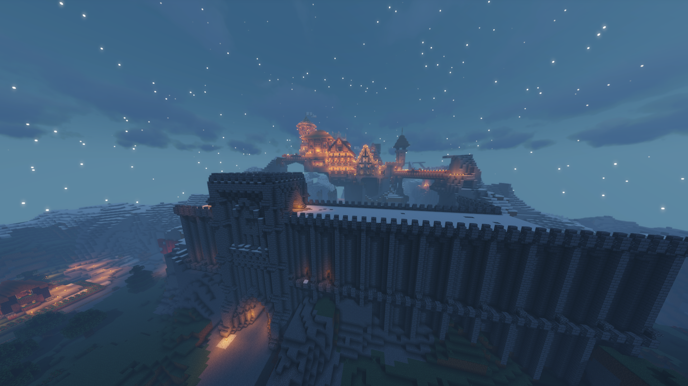

Games
Assassin's Creed Odyssey
Assassin’s Creed Odyssey ist ein Action-Adventure-Computerspiel, das von Ubisoft entwickelt wurde. Es ist der
elfte Teil der Hauptserie von Assassin’s Creed und der Nachfolger des 2017 erschienenen Assassin’s Creed Origins.
Der thematische Rahmen des Spiels ist eine alternative Version des Peloponnesischen Krieges. Man beginnt das
Spiel als Söldner und Enkel des spartanischen Königs Leonidas I. und erbt dessen gebrochenen Speer, der zu
einer Waffe geschmiedet wird. In Assassin's Creed Odyssey dürft ihr zu Beginn des Spiels zwischen zwei Helden
wählen, die obendrein noch unterschiedlichen Geschlechts sind. Da wäre zum einen die geschickte und charismatische
Kassandra und zum anderen der entschlossen wirkende Alexios. Habt ihr euch einmal für einen der beiden entschieden,
könnt ihr die Wahl nicht umkehren. Alexios und Kassandra sind gameplaytechnisch identisch und weisen dieselben
Fähigkeiten, Statistiken und alles andere auf. In Assassins Creed Odyssey hat man Verschiedene Fähigkeiten,
die man einsetzen kann. Assassin's Creed Odyssey bildete mit den griechischen Inseln ein Gebiet ab, das in der
Realität etwa 233.000 Quadratkilometer umfasst. Im Spiel wurde, das auf eine Mapp-Größe von 233 Quadratkilometern
übertragen, die ganze mapp kann man zu Fuss oder mit dem Schiff erkunden.

Minecraft
Minecraft ist ein Open-World-Spiel ohne ein fest vorgegebenes Spielziel. Das Hauptaugenmerk liegt auf der
Erkundung und Entdeckung der von Höhlen und Dungeons durchzogenen Spielwelt sowie dem Bau eigener Gebäude und
Vorrichtungen. Der Spieler kann Rohstoffe abbauen, diese zu anderen Gegenständen weiterverarbeiten und gegen
Monster kämpfen. Bauen ist eins der Wichtigsten Aspekte in Minecraft. In Minecraft gibt es so viele verschiedene
Möglichkeiten zu bauen. man kann beinahe jeden Block Zerstören und wieder Platzieren. Minecraft bietet die
Möglichkeit im Multiplayer zu Spielen. Mittlerweile gibt es unzählige Minecraft Server, auf denen man spielen kann.
Die PVP Server sind aber nicht aufgebaut wie eine normale Minecraft Welt. Die Server wurden mit Minigames
modifiziert. Der Schwerpunkt des Spiels liegt im Survival Modus. wie der Name schon sagt, Das Überleben des
Spielers Im Überlebensmodus muss der Spieler verschiedene Ressourcen, Erze finden, um weiterzukommen wie Rüstungen
und Schwerter herstellen. In der Nacht kommen verschiedene Monster.

The Witcher 3
The Witcher 3: Wild Hunt ist ein Action-Rollenspiel des polnischen Entwicklerstudios CD Projekt RED.
Es wurde am 19. Mai 2015 veröffentlicht, als Nachfolger der Spiele The Witcher (2007) und The Witcher 2:
Assassins of Kings (2011). Wie seine Vorgänger basiert The Witcher 3 auf der Hexer-Romanreihe des polnischen
Schriftstellers Andrzej Sapkowski. Im Mittelpunkt des Spiels steht als Spielerfigur erneut der Hexer Geralt
von Riva, Zusammen mit seinem Mentor, dem Hexer Vesemir, befindet sich Geralt von Riva auf der Suche nach der
Zauberin und Geralts Geliebter, Yennefer von Vengerberg. Dabei durchziehen sie das vom Krieg verwüstete Temerien,
dass sich, wie alle „Nördlichen Königreiche“, einer Invasion des mächtigen Kaiserreichs Nilfgaard erwehrt.
The Witcher 3 hat eine riesige Karte. Die Karte ist in insgesamt fünf gebiete aufgeteilt, Novigrad und Velen,
Skellige, Weissgarten, Kaer Morhen, Tousaint. Damit entspricht die begehbare Karte in Witcher 3, ohne Meer,
einer Fläche von rund 54 km². 136km² ist die Ganze Karte von The Witcher mit Meer.